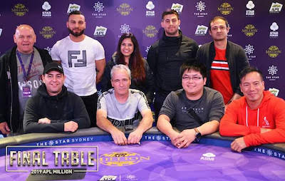
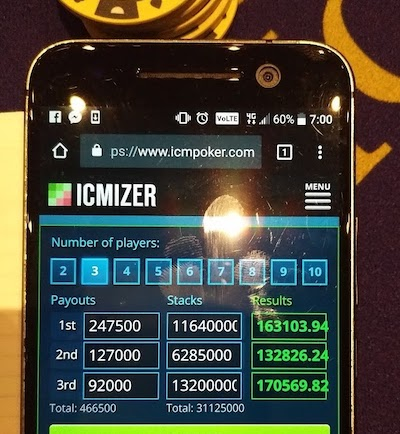
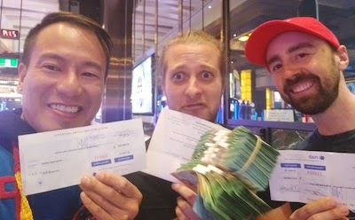
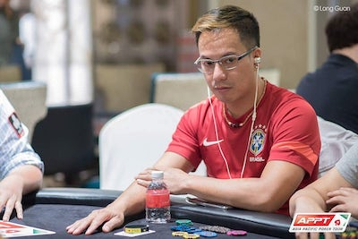
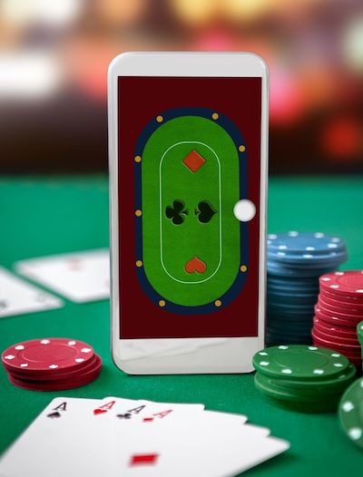

This is what brings me joy
I am a semi-professional poker player- I specialise in live poker tournaments. I coach.
Poker is a skill game & live poker has its own skill set
-

Live poker has its own special skill set- that very few people teach, and there are very few resources online that focus on this niche of the poker world. And yet live texas hold’em tournament poker is the weakest form of poker in the world.
-

I final tabled the $1,500 Australian Poker League Million Main Event back to back at Sydney's Star casino- both years had fields of over 1,000 players. In 2018 when we got down to the final 3, we chopped the remaining $460,000 prize pool. In 2019, I finished 9th out of 1,294 players.
-

I won more than AU$240,000 at THE STAR in the 2 years immediately before the pandemic... and I teach people how! I did this while running an online business full time.
The pandemic has closed poker tournaments in Sydney and has given you an opportunity to pick my brains and have me design individual lessons for your game.
1-on-1 personalized poker education
-
I provide poker coaching that analyses your game, and I give you actionable and achievable tasks to do after each session, which we then review at the next session. Every lesson is one-of-a-kind that will help you achieve your poker goals. You will be able to implement what I teach at the tables immediately.

I am not a full time coach, I play and study a lot! But I am a teacher at heart and love to train and develop students. The teaching sessions can be online by video call or in person in Sydney.
Who I can help
-
I help busy professionals who want to turn their poker hobby into an extremely profitable leisure activity, AND give them the skills to take down a live main event, and the skills to satellite into $10,600 Aussie Millions & the WSOP $10,000 main event- the biggest opportunity in poker to make a million dollars!
I cannot help you become a full time online poker player, grinding out 4bb per 100 hands profit at 10c/25c. -

I can share with you how I consistently run deep in live tournaments of over 1,000 players, and what live tournament poker game hacks you personally can use to run deep much more often than probability says you should.
My students learn what to do off the table that will give them the maximal return on minimal time put into studying, and legal tools/apps on your smartphone to use while at the tables to give you an unfair advantage…